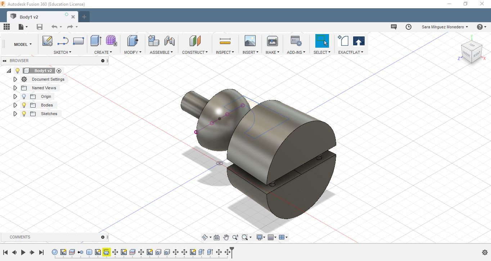

Bache INNOVATIVE
Bache INNOVATIVE is an operating family runned textile production organization passed from generations to generations. It was first founded in 1927 by Otto Bache in Apolda/Thüringen, the former well known german knitting factory.
They also have collaborate in some researchs like this jacket anti slash or shoes.
As we have to develop wearable devices, it was really interesting see how they work.


3D modelling
We are using Autodesk Fusion 360 as 3D modelling software.
For modelling a joint, the first step is to have an idea of what kind of joint we would like to create depending on it's use.
Once i thought about the idea, i start creating the joint in Autodesk Fusion 360.
The workspace selected for this, it is Model, which let us create mechanical designs that contain mostly prismatic geometry.
Let’s start!
The first thing is to choose the plane in which you want to work. Usually we are going to choose the top one.
The next step was to draw a sphere with the sphere function. Then I drew a line using the sketch mode, to split it and remove one of the parts to have only a semi sphere. Once I had the semi sphere, I added a cylinder. This is going to be my mobile part.
Now I create the base. For this purpose I selected the sketch mode, and with the arc function I drew an arch around the sphere, leaving enough space to let it rotate on the inside. After that I draw the hole base.
Once I had the closed sketch, I needed to transform it into a 3D body.
Now I selected the revolve function , inside the create tools.
Once I had the 3D figure, I needed to separate them.
For this task, as before I drew a line in the middle of the figure, and I used the split body.
Then I created two holes in one of the bodies and two cylinders using extrude in the other body, so the cylinders could penetrate in the holes and join the two bodies. 